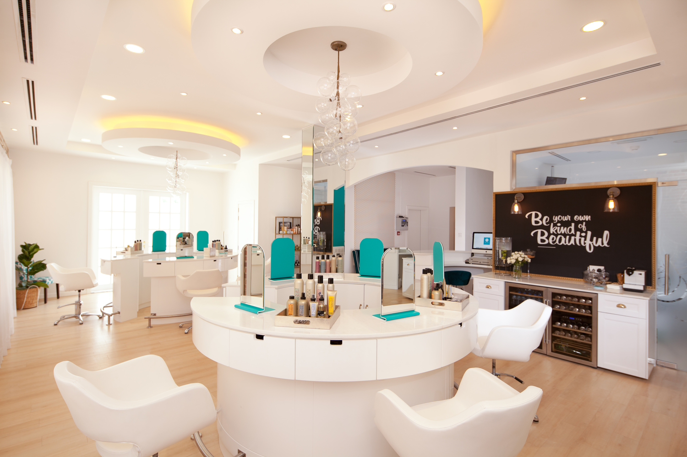
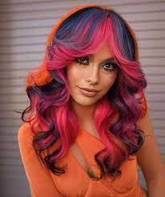
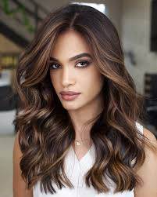

Book your Appointment!

At Hair Day, each strand of hair tells a story. Dive into a
personalized beauty journey where edgy meets elegance. With
limited appointments, your dream look is just a booking away.
Embrace the bespoke Hair Day experience where every cut, color,
and style is a masterpiece crafted just for you!
Check Out Our DIY Tutorials!


Why wait for your next salon visit to experiment with new looks?
Discover our expertly curated makeup and nail tutorials designed
to inspire your creativity. From edgy color tips to the latest in
nail art, let Hair Day guide you through enhancing your unique
style, one tutorial at a time!
See What We Are About!

Founded in Madison by Pria and Garry, Hair Day is where creativity
blooms and beauty is unleashed. Our boutique salon specializes in
personalized cuts, colors, and more, crafted by our team of
experts in a creative, fun, and inviting atmosphere. Discover your
next signature look with us!